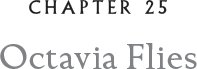

Octavia began her training that very night. “Teach me! Teach me now!”
“Teach you what?”
“To fly! To fly on your back.”
“B-b-but, Octavia, first you have to get to Dark Fowl! It’s not a long swim. The currents this time of year will carry you there swiftly.”
“It’s not as fast as flying,” she said, slyly narrowing her eyes. “You can teach me.”
“I’ve never taught a snake! Other Kielian snakes teach the snake recruits.”
“But you’ve certainly carried snakes during their training, or how could they learn? Come on, let’s try it,” she said, and there was something so persuasive in her voice that I couldn’t resist.
You have to remember that a Whiskered Screech is definitely a midsized owl, perhaps even at the smaller end of the midsized range. We are three times the size of a Northern Saw-whet or a Pygmy or Elf, but far from the huge dimensions of a Great Gray or an Eagle Owl. I staggered a bit when Octavia, who was no sylph, crawled onto my back.
“Get used to it. Get used to it,” she said gently. “Walk around a bit.” I’m not a Burrowing Owl, who are known for their ability to walk, run, and even dig earth with their strong legs, and the thought of stomping around with a load of snake on my back wasn’t especially appealing. So I did not walk far. In fact, I took only two steps before I turned directly into the wind.
“Why are you turning this way?” Octavia asked.
“Your first lesson: I am calculating the headwind and crosswind. Owls always take off into the wind.”
“Why?”
“Because a headwind generates more lift. I want you to partially engage your ESPs for takeoff. This will accelerate our climb.”
I heard the whisper of Octavia’s extension scale plates as they began to unfurl. It was incredible! I lifted off in half the time it normally took carrying a snake, and Octavia was the largest snake I’d ever transported. She began instinctively to do the special breathing that Kielians had mastered for swimming underwater. The breathing inflated her pulmonary air sacs and, by some strange alchemy, made her lighter in the air.
“Great Hordox!” Octavia exclaimed. “I — I — I can’t believe it. I’m almost at a loss for words!” I had a sense that this rarely happened to Octavia. But then I caught sight of her shadow printed against the moon as she reared in a spiral on my back. Together we made a fantastical two-headed creature of wings and helical twists soaring through the night.
“This is the most wondrous thing! I — I — I’m rapturous!” she cried, and the words rang out into the sky.

Never had a snake aided an owl so superbly in flight. To see her unfurl those immense scales that collared Octavia’s neck stirred my gizzard. She was intuitive about the winds.
To fly well, one must deploy all the natural devices that we owls possess. There are the principal flight controls — our wings that flap up and down and propel us forward. Then there are the smaller, secondary movements of our wings that shape our feathers to take fullest advantage of the wind. Through these minuscule adjustments, we can avoid wild yaws and pitches from unexpected gusts that sweep in sideways and throw us off balance. Now with the Kielian snakes’ ESPs, especially Octavia’s, it was as if we had gained a third set of controls that revolutionized combat flight. Soon you could hear owls shouting, “Bless Hordo!” or Kielian snakes crying out, “Bless Glaux!” during difficult maneuvers.
Within three days of our return, Octavia had been promoted to the rank of master sergeant and served alongside Hoke, Gilda, and Dylan, instructing other Kielian snakes on “bi-flight,” the term we settled on for aerial combat using snakes and owls. The first time I heard an owl say, “Bless Hordo!” my gizzard quivered with joy. For I knew my idea for the Glauxspeed Division was truly working — an assortment of different species was coming together in a combat unit.
And it was none too soon. The news from the front became grimmer every day. There were now so many orphaned owls that refugee camps had been set up for them. If Bylyric invaded, who would take care of the young ones? Would they be raised under the tyranny of that evil owl? What kind of world would that make?
Lil and I were spending a great deal of time together, both while we trained and off the training field. We were frightened to talk about a future — with the war growing hotter, it seemed like tempting fate. We lived from night to night, and after all the drills and strategy sessions, as the blackness began to thin into the pale pink of dawn, Lil and I would meet and fly off as far as we could get from the Academy. If the temperature was right, we played scooter scooch, sliding down the winds toward the sea, our shadows dancing on the sun-splashed water. But the best times were when we found a little patch somewhere and talked, telling each other of home and our hollows. We tried not to think of war.
I told her about my strange tantya Hanja, who always appeared on the brink of impending disaster. Lil churred when I told her these family stories. I loved the sound of Lil’s laughter. It was so rich and lilting, like a song in itself. But I wondered if we would ever have new family stories to tell.
Every day brought us closer to the season of soffen issen. The slightest change in temperature rattled my gizzard. I had vivid daymares of melting ice and the issen blomen, the ice flowers that sprouted in spring at the edges of glaciers and avalanches. In my dreams, the issen blomen melted into pools of blood, soaking through snow scattered with broken and singed feathers.
Late one morning when Lil and I returned, Blix and Loki were waiting for us. They were so excited they were almost jumping out of their feathers.
“He said yes!” Loki clamored.
“The general said yes!” Blix snapped her beak and twittered, a common vocalization for excited Saw-whets.
Loki explained, “General Andricus has consented to your request to go to Shagdah Snurl to do —”
“To do all that stuff!” Blix broke in with a clacking of her tiny beak. “You know, the weather stuff, all that scientific stuff you’re always talking about. And the best part is we get to go with you! We’ll be your guides.”
I swiveled my head toward Lil. This was a wish come true, but sometimes the best wishes … well, they come with shadows.
“Lyze,” Lil said, touching my chest with her wing tip. “It’s wonderful! You might discover things that could really help us.”
“Lil, the general says that you’re to take over the Kielian snake training, along with Octavia, of course,” Loki said.
“I am?!” Lil’s luminous eyes shined with pride.
The orders to go to the Shagdah Snurl made perfect sense. Preparations for the Glauxspeed Division were well under way, and it had been reported that the Ice Talon forces were totally occupied with preparations for the invasion.
“But we can’t deceive ourselves, Lyze,” the general said in my meeting with him. “They’re going to come back with a vengeance. We’ve been busy working on our new strategies with the snakes. They’re going to be planning their own new tactics.”
“Do you think they know about the snakes, sir?”
“I hope not. We’ve had surveillance owls out constantly, and you know we’ve shut down the grog trees on this end of the island. It’s a no-fly zone. But you never can tell. So get some rest. I want you to depart at First Lavender with Blix and Loki for Shagdah.”
“Yes, sir.”
I was about to leave the chamber when the general called me back. “Lyze, I nearly forgot.”
“Forgot what, sir?”
“I just got a message from your mum. Your younger brother will be coming here for his first cadet moons. He’ll arrive before you return. Your late father was one of the bravest owls I knew, and your mother is a superb commando in the Ice Dagger unit, not to mention your truly inventive military mind. I’m sure Ifghar will make us all very proud.”
I felt a slight twinge in my gizzard and almost said, I hope so. But I caught myself and nodded my head crisply. “I’m sure he will, sir.”
“Dismissed.”
I knew I had to rest, but I was so excited I could hardly sleep. It would be difficult not seeing Lil, but she was so supportive. She kept repeating how this trip was a chance of a lifetime for me. Before I left, we went out to our favorite place at the end of the island and soared on the thermals over the sea. The moon was rising full and golden, casting a wide, glittering path of light across the dark sea. We flew close to each other, our wing tips often touching and sometimes our wings overlapping, printing one immense wing against the sea. It was almost as if, in those moments, we became one owl, for I could not see where I left off and Lil began.
“Lyze,” she said. “You might learn something on this trip to end the war! And then …”
“It’s almost unimaginable, a world without war,” I said.
“But that’s exactly why this trip is so important.” She extended her wing tip to touch my flight feathers, and I felt a pulse streak through me. I was suddenly too shy to look her in the eye and studied the water beneath me.
“Lil?” I whispered.
“We could become wingfast.” Once more our wings slipped over each other.
I swiveled my head toward her, my eyes filled with disbelief. “What?” I whispered. “Say it again!”
“Wingfast … you and me.”
She believed in me. She believed in me so much that she dared speak of a future. I couldn’t help it; it made me cry. She gently lifted a wing and dried my eyes with the soft feathers of her plummels.
“Someday, Lyze, when there’s no war, we’ll discover old and wonderful things together.”
My gizzard now was absolutely tingling. A future … a future with Lil! The love of my life. The love of my future. For I had the peculiar feeling that we had always been together in some way. That we were two old souls who had finally come together again on the far edge of an endless, tired war.